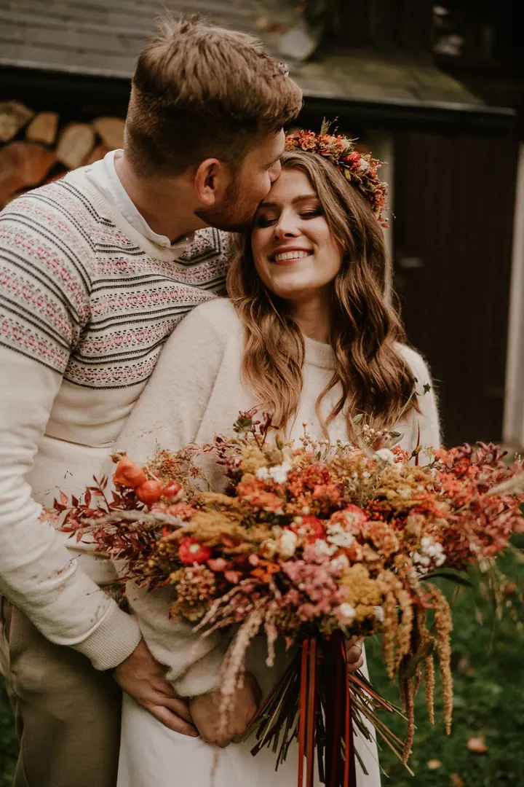
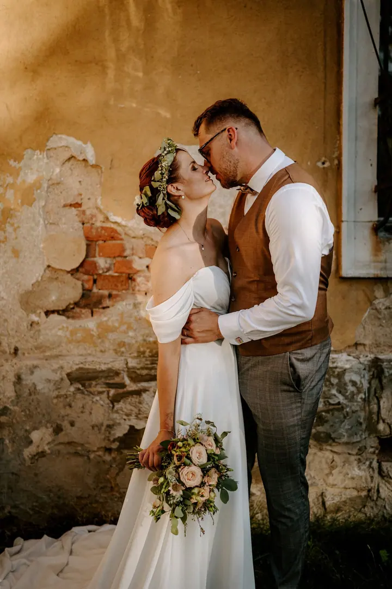
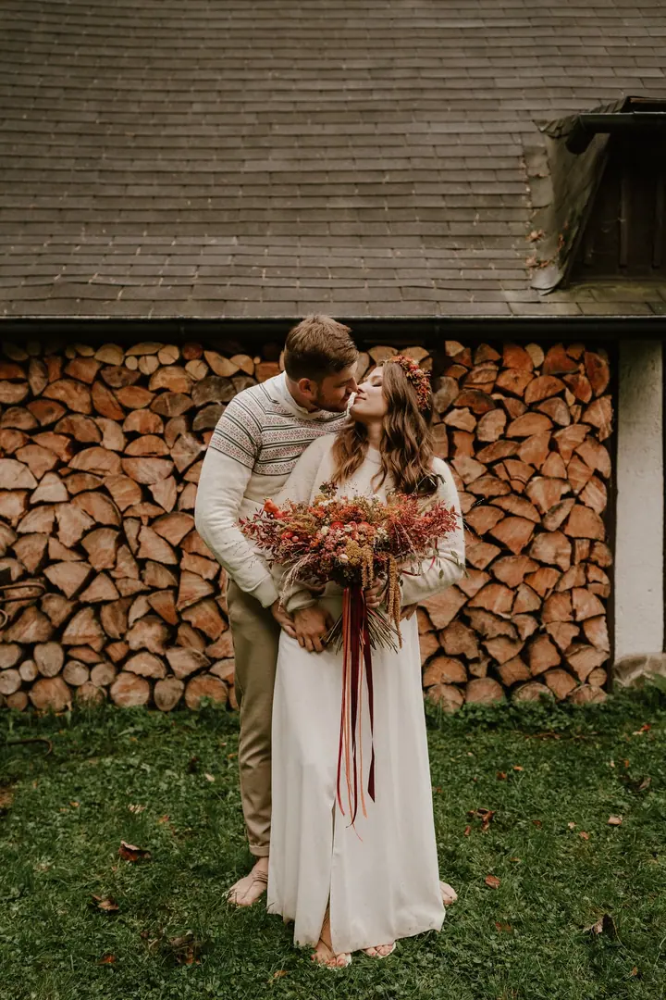
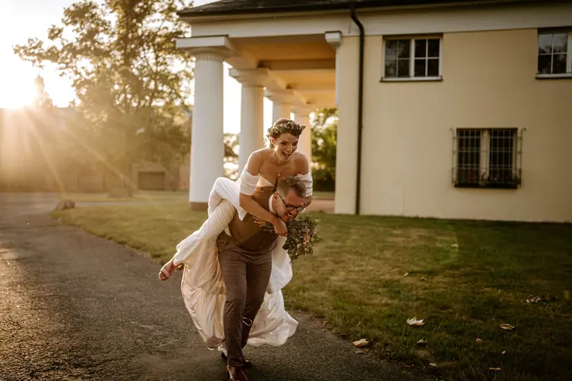

Svatby
Celodenní reportáž, kdy jsem s vámi od začátku do konce, s foťákem i s pochopením. Fotím i malé svatby a elopementy, ty mám nejradši.

Jmenuji se Martina Žilková a jsem svatební, rodinná a porodní fotografka z Opavy. Fotím přirozeně a reportážně, bez nucených póz, tak abyste se ve fotkách našli, ne jen …
Rezervovat termínDomov mám v Opavě, kde žiju se svou rodinou, ale na focení za vámi dojedu kamkoliv. K fotografii mě přivedla mateřská. Chtěla jsem zachytit své děti takové, jaké opravdu byly, v pohybu, smíchu a drobných gestech, která mizí rychleji, než si je stihneme uvědomit. Tehdy jsem pochopila, jakou sílu fotka má.


Vystudovala jsem psychologii a před dětmi pracovala v personalistice. Práce s lidmi, komunikace a empatie jsou mi blízké. Při focení jsem spíš tichý pozorovatel, který zbytečně nenarušuje atmosféru, ale vím, kdy je potřeba poradit, podpořit a pomoci.
Chci, aby focení bylo přirozenou součástí vašeho dne, ne jeho přerušením. Můžeme jet na výlet, dát si rande ve městě nebo opéct buřty na vaší zahradě. Žádné univerzální místo a nic neříkající pózy, jen vy, tady a teď.
Co fotím
Celodenní reportáž, kdy jsem s vámi od začátku do konce, s foťákem i s pochopením. Fotím i malé svatby a elopementy, ty mám nejradši.
Hezké odpoledne strávené tak, jak to máte rádi: výlet, rande ve městě nebo obyčejný den doma. Já ve správných chvílích prostě zachycuji.
Miluju mocnou sílu okamžiku, kdy přichází nový život. Fotím první dny s miminkem přirozeně a s respektem k vašemu domovu.
Klidné focení podle vás, bez nutnosti pózovat. Zachytím čas očekávání takový, jaký opravdu je.
Postup
Pošlete mi pár slov o vaší svatbě nebo rodině. Ráda vám pošlu ceník a domluvíme termín.
Po rezervaci termínu se potkáme, abychom se poznali a ujistili se, že jsme na stejné vlně. Probereme vaše představy a to, co je pro vás důležité.
Pár měsíců před svatbou se sejdeme znovu a doladíme detaily. Schůzku můžeme spojit s předsvatebním focením, které máte v balíčku zdarma.
Jsem po vašem boku od začátku do konce. Vím, kdy vás nasměrovat a kdy nechat věci plynout, a zachytím i momenty, kterých si sami ani nevšimnete.
Otázky
Určitě. Po rezervaci termínu se potkáme osobně, abychom se poznali. Pár měsíců před svatbou se sejdeme znovu a naplánujeme vše potřebné.
Není nutností, ale je fajn. Proto ho mám ve svatebním balíčku zdarma. Získáte pár párových fotek a vyzkoušíme si vzájemnou spolupráci.
Jsem s vámi, a když je třeba, pomůžu vás nasměrovat. Nejkrásnější fotky stejně vznikají ze spontánních a skutečných momentů.
Základní focení na 1 hodinu s 25 upravenými fotografiemi stojí 3 800 Kč. Balíček Váš příběh za 5 500 Kč zahrnuje 1 až 2 hodiny focení a celou galerii, v průměru 100 snímků.
